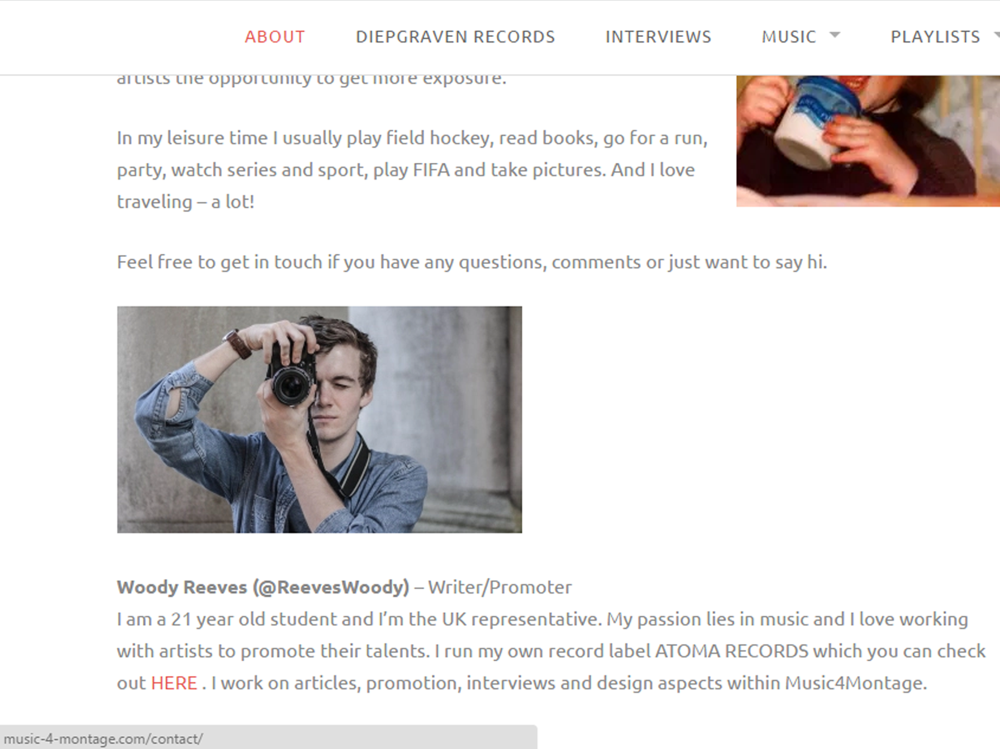

Music4Montage.
Digital Company Development
Music4Montage is an online music promotion company. It reaches out to over 200,000 people via Youtube, Facebook, Soundcloud and its Website.
Music4Montage is an online music promotion company. It reaches out to over 200,000 people via Youtube, Facebook, Soundcloud and its Website.
I started working for Music4Montage in 2013. Originally, I was just a writer for the company, but was quickly aknowledged for my experience in design and branding. I was able to assist with digital design promotion through Facebook and Youtube.
Below is the sites about page which can be viewed here http://music-4-montage.com/team/ I am able to use Wordpress to edit the company site with new interviews and blog posts.
I have interviewed hundreds of artists during my time with Music4Montage. These range from top DJ/producers The Chainsmokers to the incredibly talented rapper and vocalist OnCue. I have been able to interview them via email and skype during their busy careers abroad. This oppertunity has given me the confidence to interact with new people from around the world, wherever, whenever. I was able to meet the owner of Music4Montage Koen Bodewes in Amsterdam in the summer of 2015. Although it was the first time I had met Koen face to face, we were able to talk business confidently.

to be continued...